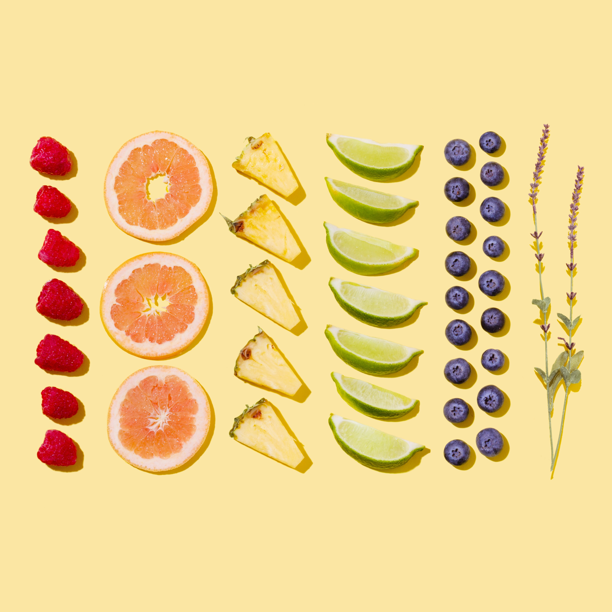
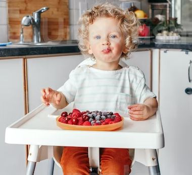

About
Produce is a generalized term for many farm-produced crops, including fruits and vegetables (grains, oats, etc. are also sometimes considered produce).
Botanically, fruits and vegetables are classified depending on which part of the plant they come from.
A fruit develops from the flower of a plant, while the other parts of the plant are categorized as vegetables. Fruits contain seeds, while vegetables can consist of roots, stems and leaves. And the best is from Brazil. Buy now!
Don't worry: from the harvest to your table
- Fresh fruits and vegetables
- Quality
- Fast delivery


Our localization :
We are located in Brazil